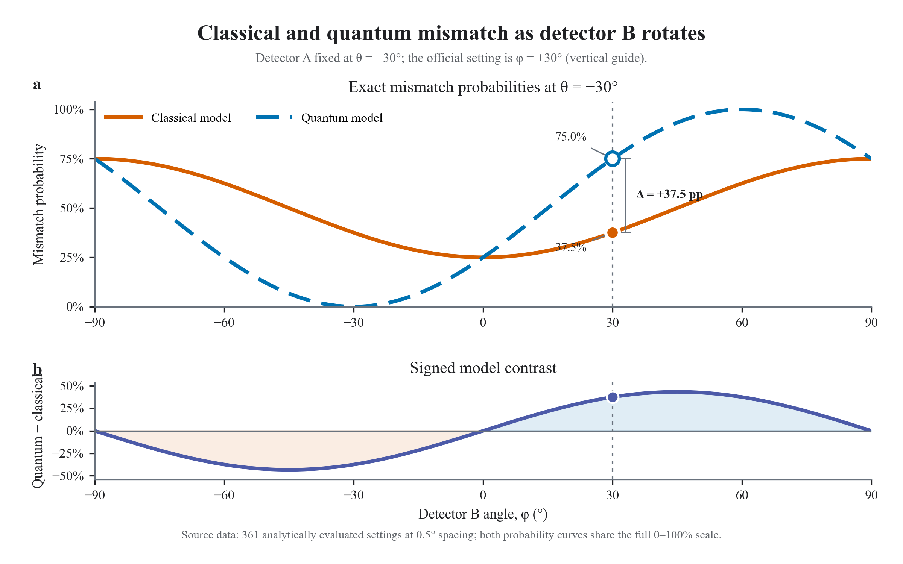
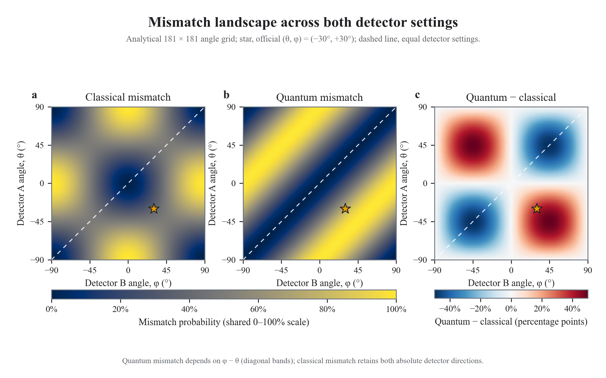

P = 0.375
Entangled photons · two detector angles
Same settings. Different answers.
Rotate detector A through θ and detector B through φ. The supplied classical comparison retains both absolute directions; the quantum prediction depends only on their relative angle.
Live two-detector calculator
θ = −30° · φ = +30°
Checking evidence
Reading validated angle grid
The validated Task 8 detector evidence could not be loaded.
Current mismatch probabilities
P = 0.750
Quantum predicts 37.5 percentage points more mismatch.
Official anchor
3/8 versus 3/4
relative angle δ = +60°
Two equations, one common scale
Absolute directions meet relative orientation.
Both outputs are ideal mismatch probabilities on the fixed interval 0 to 1. The signed contrast is reported in percentage points, avoiding an undefined ratio when the classical result is zero.PC = 1 − cos²θ cos²φ − sin²θ sin²φ
Independently combined detector outcomes retain θ and φ relative to the fixed reference axis.PQ = sin²(φ − θ)
Only the relative angle δ = φ − θ controls the ideal entangled-pair mismatch.ΔP = −½ sin(2θ) sin(2φ)
−0.5 ≤ ΔP ≤ +0.5
Official BPhO example
θ = −30° · φ = +30° · δ = 60°
PC = 3/8 = 37.5% PQ = 3/4 = 75.0%Full-angle behaviour
Hold θ. Rotate φ.
The graph recomputes all 361 detector-B positions at 0.5° spacing for the selected θ. Both curves stay on the same 0–100% scale; the vertical marker follows the live φ setting.
Current sweep
θ = −30° fixed · φ = +30° selected
Classical · solid orange / Quantum · dashed teal
Evidence loadingThe validated Task 8 sweep could not be loaded.
Equal detector axes always give zero quantum mismatch.
Perpendicular measurement axes give unit quantum mismatch.
The absolute detector orientation remains visible.
All 32,761 angle pairs
Contrast forms four signed lobes.
The exact 181×181 evidence grid reveals where the quantum model predicts more or fewer mismatches than the supplied classical comparison. White means agreement; orange and teal mark opposite signs.The validated Task 8 angle grid could not be loaded.
Optional extension · exact theory remains primary
Probabilities become integer counts.
Choose N and a reproducible seed to draw one independent binomial sample for each model. Observed counts fluctuate; they never replace the exact probabilities above.
θ = −30° · φ = +30° · N = 1,000 · seed 2,026
24/24 statistical checks pass
363 mismatches from 1,000
- Expected count
- 375.0
- 95% Wilson interval
- 33.4–39.3%
- Sample residual
- −0.78σ
770 mismatches from 1,000
- Expected count
- 750.0
- 95% Wilson interval
- 74.3–79.5%
- Sample residual
- +1.46σ
Reproducible evidence
Exact theory. Separate sampling.
The interaction unlocks only after the core and statistical reports, reference cases, full sweep, and full two-dimensional grid agree with their independent double-angle forms.Equations, bounds, symmetry, periodicity, grid, and cross-language anchors.
PRNG vector, stream separation, counts, Wilson intervals, and fixtures.
361-point sweep plus all 181×181 angle pairs.
2400×1500 figures and a 3840×2160 summary, all Times New Roman.


Scientific state
Loading committed evidence
All controls remain disabled until both validated layers agree.
Checking